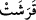

Hoca: “Peki “” nedir?” dedi. İsa:
“Kaf” Allâh’ın kudreti, “râ” Allâh’ın rubûbiyyeti, “şın” Allâh’ın dilemesi, “te” ise
Allâh’ın müşriklerin ortak koştukları şeylerden yüce, berî olması demektir.” dedi.
Bunun üzerine hoca “Güzel!” deyip sonra Meryem’e: “Oğlunu al götür, o bana
bilmediğim şeyleri öğretti.” dedi. Kısasu’l-enbiyâ’da böyle geçmektedir.
Bu kelimelerin, yâni Ebced, Hevvez, Huttî, Kelemen, Se‘fas, Karaşet, Sehaz,
Dazağ’ın daha önce yaşamış sekiz kralın veya sekiz filozofun adı olduğu söylenmiştir.
Ya da bu kelimeleri Yunanlılar’ın sayıları kaydetmek ve derecelerini ayırmak için îcâd
ettikleri de söylenmiştir. Nitekim Şerhu’t-takvîm’de böyle geçmektedir.
Muhammed b. Talha ise el-İkdu’l-ferîd’de şöyle der: “Arapça yazıyı ilk îcâd eden,
harflerini ve kısımlarını koyan Tasm kabilesinden altı kişi idi. Bunlar Üded oğlu
Adnan’ın misafirleriydi. İsimleri ise, Ebced, Hevvez, Huttî, Kelemen, Se’fas ve Karaşet
idi. Arapça yazıyı kendi adlarına göre îcâd edip ortaya koydular. Lâfızlarda (telaffuz ve
konuşmalarda) kendi adlarında olmayan harfleri duyunca bunlara başka harfler ekleyip
onlara da “revâdif” dediler. Bu harfler şunlardır: “Se, Hâ (noktalı), Zâl, Dâd, Zâ,
Gayn” Böylece alfabede bulunan harfler tamamlanmış oldu.” Bu hususta başka şeyler
de denilmiştir, ama özeti budur.
[18]. Bk. ed-Dürru’l-mensûr, V, 489.